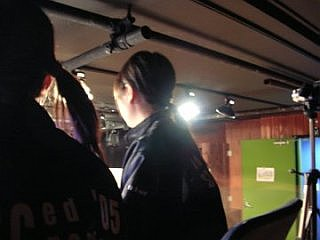
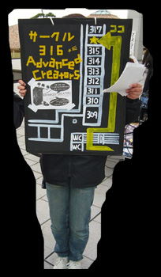

ABOUT
Advanced Creators概要

Advanced Creatorsは、学内学外を問わず、主に屋内・外のステージ等において音響・照明・イベント企画を行っている東京工科大学のサークルです。
主な活動内容は、学内では各音楽サークルのライブや演劇、東京工科大学大学祭でのステージ作成、学外では立川・八王子・武蔵村山近辺の野外イベント・ライブでの音響、舞台、照明のスタッフとしての活動等です。
サークル詳細

| 名称 | Advanced Creators (アドバンスト・クリエイターズ) |
|---|---|
| 略称 | アドバン / Advan |
| 設立 | 1987年 |
| 所在地 | 〒192-0982 東京都八王子市片倉町1404-1 東京工科大学 サ-316 |
| 部室 | サークル棟 3F サ-316 サークル棟の階段を3階まで降りて、正面右奥の廊下を進み、奥から2番目の部屋 |
| 顧問 | バイオニクス学部講師 三田 俊裕 |
| 連絡先 | E-mail: advancedcreators@gmail.com |